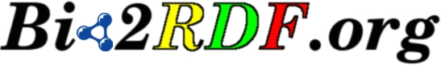

Semantic web atlas of postgenomic knowledge
Select an ID example
Semantic discovery for "Paget" in Bio2RDF
Semantic discovery for "hexokinase" in Bio2RDF
Demonstration set of Bio2RDF URI's
Ensembl gene, ensembl:ensmusg00000058618
OBO GO term, go:0032283
OBO ChEBI compound, chebi:16526
NCI Thesauras term, ncithesaurus:Topical_Anti-Infective_Agent
NCBI gene, geneid:15275
NCBI identifier, gi:94471496
NCBI sequence, genbank:AC008393
NCBI mesh definition, mesh:D005615
NCBI article, pubmed:11992264
NCBI disease, omim:602080
Kegg compound, cpd:C00011
Kegg drug, dr:D00001
Kegg enzyme, ec:2.2.1.6
Kegg glycan, gl:00144
Kegg reaction, rn:R00014
Kegg pathway, path:mmu00010
MGI gene, mgi:94903
PDB structure, pdb:1A19
UniProt protein, uniprot:P26838
UniProt keyword, keywords:814
UniProt enzyme, enzyme:2.3.1.28
UniProt taxonomy, taxonomy:9606
UniProt article, citations:8177218
UniProt cluster, uniref:UniRef50_P26838
UniProt sequence, uniparc:UPI000012703C
Text search for "parkinson" in EntrezGene
Search for NCBI gene list from Map Viewer, mapview:9606-5-178m-180m
Text search for "parkinson" in MeSH
Text search for "parkinson" in OMIM
Text search for "parkinson" in UniProt
Text search for "parkinson" in Kegg
Text search for "parp1" in EntrezGene
Text search for "parp1" in UniProt
Text search for "paget" in EntrezGene
Text search for "paget" in OMIM
Text search for "Morissette" in OMIM
Text search for "Morissette,J" in Pubmed
Bio2RDF Blog feed loading...